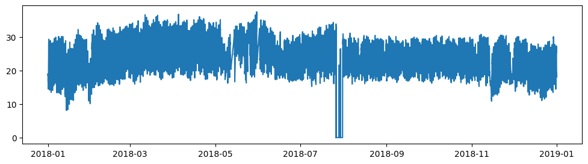
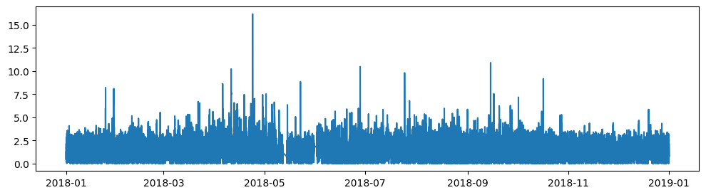

import pandas as pd
import matplotlib.pyplot as plt38 import numpy as np
f = "../data/002_processed/esolmet_2018.parquet"
tmx = pd.read_parquet(f)
tmx| Ib | Ig | Id | uv | To | hr | ws | p | |
|---|---|---|---|---|---|---|---|---|
| Fecha | ||||||||
| 2018-01-01 00:00:00 | 0.057 | 0.0 | 0.0 | 0.001 | 18.93 | 41.57 | 1.253 | 879.0692 |
| 2018-01-01 00:10:00 | 0.002 | 0.0 | 0.0 | 0.001 | 18.76 | 41.00 | 0.418 | 879.4363 |
| 2018-01-01 00:20:00 | 0.170 | 0.0 | 0.0 | 0.001 | 18.92 | 40.96 | 0.955 | 879.5181 |
| 2018-01-01 00:30:00 | 0.371 | 0.0 | 0.0 | 0.001 | 18.52 | 42.46 | 1.823 | 879.5826 |
| 2018-01-01 00:40:00 | 0.305 | 0.0 | 0.0 | 0.001 | 18.49 | 42.43 | 2.149 | 879.6826 |
| ... | ... | ... | ... | ... | ... | ... | ... | ... |
| 2018-12-31 23:10:00 | 0.125 | 0.0 | 0.0 | 0.000 | 18.88 | 59.60 | 2.145 | 875.5595 |
| 2018-12-31 23:20:00 | 0.000 | 0.0 | 0.0 | 0.000 | 18.71 | 59.67 | 1.638 | 875.5595 |
| 2018-12-31 23:30:00 | 0.044 | 0.0 | 0.0 | 0.000 | 18.52 | 58.75 | 1.923 | 875.2889 |
| 2018-12-31 23:40:00 | 0.170 | 0.0 | 0.0 | 0.000 | 18.36 | 60.62 | 2.089 | 875.0606 |
| 2018-12-31 23:50:00 | 0.003 | 0.0 | 0.0 | 0.000 | 17.99 | 60.76 | 0.744 | 875.1424 |
51173 rows × 8 columns
class analisis_meteo:
def __init__(self,filepath,lat, lon):
# self.data = self._limpia_csv(f)
self.data = pd.read_parquet(filepath)
self.lat = lat
self.lon = lon
self._estatica = 225
def grafica_columna(self,columna="To"):
fig, ax = plt.subplots(figsize=(12,3))
ax.plot(self.data[columna])
# ax.set_ylim(0,self._estatica)
plt.show()
def promedios_mensuales(self,columna="To"):
return self.data[columna].resample("ME").mean()
def _limpia_csv(self,filepath):
pass
temix = analisis_meteo("../data/002_processed/esolmet_2018.parquet",lat=18.9,lon=-99)
# wswd = analisis_meteo("../data/002_processed/esolmet_ruoaWSWD_2018.parquet",lat=18.9,lon=-99) temix._estatica225temix.grafica_columna()
dir(df_wswd)['Ib',
'Id',
'Ig',
'T',
'To',
'_AXIS_LEN',
'_AXIS_ORDERS',
'_AXIS_TO_AXIS_NUMBER',
'_HANDLED_TYPES',
'__abs__',
'__add__',
'__and__',
'__annotations__',
'__array__',
'__array_priority__',
'__array_ufunc__',
'__arrow_c_stream__',
'__bool__',
'__class__',
'__contains__',
'__copy__',
'__dataframe__',
'__dataframe_consortium_standard__',
'__deepcopy__',
'__delattr__',
'__delitem__',
'__dict__',
'__dir__',
'__divmod__',
'__doc__',
'__eq__',
'__finalize__',
'__floordiv__',
'__format__',
'__ge__',
'__getattr__',
'__getattribute__',
'__getitem__',
'__getstate__',
'__gt__',
'__hash__',
'__iadd__',
'__iand__',
'__ifloordiv__',
'__imod__',
'__imul__',
'__init__',
'__init_subclass__',
'__invert__',
'__ior__',
'__ipow__',
'__isub__',
'__iter__',
'__itruediv__',
'__ixor__',
'__le__',
'__len__',
'__lt__',
'__matmul__',
'__mod__',
'__module__',
'__mul__',
'__ne__',
'__neg__',
'__new__',
'__nonzero__',
'__or__',
'__pandas_priority__',
'__pos__',
'__pow__',
'__radd__',
'__rand__',
'__rdivmod__',
'__reduce__',
'__reduce_ex__',
'__repr__',
'__rfloordiv__',
'__rmatmul__',
'__rmod__',
'__rmul__',
'__ror__',
'__round__',
'__rpow__',
'__rsub__',
'__rtruediv__',
'__rxor__',
'__setattr__',
'__setitem__',
'__setstate__',
'__sizeof__',
'__str__',
'__sub__',
'__subclasshook__',
'__truediv__',
'__weakref__',
'__xor__',
'_accessors',
'_accum_func',
'_agg_examples_doc',
'_agg_see_also_doc',
'_align_for_op',
'_align_frame',
'_align_series',
'_append',
'_arith_method',
'_arith_method_with_reindex',
'_as_manager',
'_attrs',
'_box_col_values',
'_can_fast_transpose',
'_check_inplace_and_allows_duplicate_labels',
'_check_is_chained_assignment_possible',
'_check_label_or_level_ambiguity',
'_check_setitem_copy',
'_clear_item_cache',
'_clip_with_one_bound',
'_clip_with_scalar',
'_cmp_method',
'_combine_frame',
'_consolidate',
'_consolidate_inplace',
'_construct_axes_dict',
'_construct_result',
'_constructor',
'_constructor_from_mgr',
'_constructor_sliced',
'_constructor_sliced_from_mgr',
'_create_data_for_split_and_tight_to_dict',
'_data',
'_deprecate_downcast',
'_dir_additions',
'_dir_deletions',
'_dispatch_frame_op',
'_drop_axis',
'_drop_labels_or_levels',
'_ensure_valid_index',
'_find_valid_index',
'_flags',
'_flex_arith_method',
'_flex_cmp_method',
'_from_arrays',
'_from_mgr',
'_get_agg_axis',
'_get_axis',
'_get_axis_name',
'_get_axis_number',
'_get_axis_resolvers',
'_get_block_manager_axis',
'_get_bool_data',
'_get_cleaned_column_resolvers',
'_get_column_array',
'_get_index_resolvers',
'_get_item_cache',
'_get_label_or_level_values',
'_get_numeric_data',
'_get_value',
'_get_values_for_csv',
'_getitem_bool_array',
'_getitem_multilevel',
'_getitem_nocopy',
'_getitem_slice',
'_gotitem',
'_hidden_attrs',
'_indexed_same',
'_info_axis',
'_info_axis_name',
'_info_axis_number',
'_info_repr',
'_init_mgr',
'_inplace_method',
'_internal_names',
'_internal_names_set',
'_is_copy',
'_is_homogeneous_type',
'_is_label_or_level_reference',
'_is_label_reference',
'_is_level_reference',
'_is_mixed_type',
'_is_view',
'_is_view_after_cow_rules',
'_iset_item',
'_iset_item_mgr',
'_iset_not_inplace',
'_item_cache',
'_iter_column_arrays',
'_ixs',
'_logical_func',
'_logical_method',
'_maybe_align_series_as_frame',
'_maybe_cache_changed',
'_maybe_update_cacher',
'_metadata',
'_mgr',
'_min_count_stat_function',
'_needs_reindex_multi',
'_pad_or_backfill',
'_protect_consolidate',
'_reduce',
'_reduce_axis1',
'_reindex_axes',
'_reindex_multi',
'_reindex_with_indexers',
'_rename',
'_replace_columnwise',
'_repr_data_resource_',
'_repr_fits_horizontal_',
'_repr_fits_vertical_',
'_repr_html_',
'_repr_latex_',
'_reset_cache',
'_reset_cacher',
'_sanitize_column',
'_series',
'_set_axis',
'_set_axis_name',
'_set_axis_nocheck',
'_set_is_copy',
'_set_item',
'_set_item_frame_value',
'_set_item_mgr',
'_set_value',
'_setitem_array',
'_setitem_frame',
'_setitem_slice',
'_shift_with_freq',
'_should_reindex_frame_op',
'_slice',
'_stat_function',
'_stat_function_ddof',
'_take_with_is_copy',
'_to_dict_of_blocks',
'_to_latex_via_styler',
'_typ',
'_update_inplace',
'_validate_dtype',
'_values',
'_where',
'abs',
'add',
'add_prefix',
'add_suffix',
'agg',
'aggregate',
'align',
'all',
'any',
'apply',
'applymap',
'asfreq',
'asof',
'assign',
'astype',
'at',
'at_time',
'attrs',
'axes',
'backfill',
'between_time',
'bfill',
'bool',
'boxplot',
'clip',
'columns',
'combine',
'combine_first',
'compare',
'convert_dtypes',
'copy',
'corr',
'corrwith',
'count',
'cov',
'cummax',
'cummin',
'cumprod',
'cumsum',
'describe',
'diff',
'div',
'divide',
'dot',
'drop',
'drop_duplicates',
'droplevel',
'dropna',
'dtypes',
'duplicated',
'empty',
'eq',
'equals',
'eval',
'ewm',
'expanding',
'explode',
'ffill',
'fillna',
'filter',
'first',
'first_valid_index',
'flags',
'floordiv',
'from_dict',
'from_records',
'ge',
'get',
'groupby',
'gt',
'head',
'hist',
'hr',
'iat',
'idxmax',
'idxmin',
'iloc',
'index',
'infer_objects',
'info',
'insert',
'interpolate',
'isetitem',
'isin',
'isna',
'isnull',
'items',
'iterrows',
'itertuples',
'join',
'keys',
'kurt',
'kurtosis',
'last',
'last_valid_index',
'le',
'loc',
'lt',
'map',
'mask',
'max',
'mean',
'median',
'melt',
'memory_usage',
'merge',
'min',
'mod',
'mode',
'mul',
'multiply',
'ndim',
'ne',
'nlargest',
'notna',
'notnull',
'nsmallest',
'nunique',
'p',
'pad',
'pct_change',
'pipe',
'pivot',
'pivot_table',
'plot',
'pop',
'pow',
'prod',
'product',
'quantile',
'query',
'radd',
'rank',
'rdiv',
'reindex',
'reindex_like',
'rename',
'rename_axis',
'reorder_levels',
'replace',
'resample',
'reset_index',
'rfloordiv',
'rmod',
'rmul',
'rolling',
'round',
'rpow',
'rsub',
'rtruediv',
'sample',
'select_dtypes',
'sem',
'set_axis',
'set_flags',
'set_index',
'shape',
'shift',
'size',
'skew',
'sort_index',
'sort_values',
'squeeze',
'stack',
'std',
'style',
'sub',
'subtract',
'sum',
'swapaxes',
'swaplevel',
'tail',
'take',
'to_clipboard',
'to_csv',
'to_dict',
'to_excel',
'to_feather',
'to_gbq',
'to_hdf',
'to_html',
'to_json',
'to_latex',
'to_markdown',
'to_numpy',
'to_orc',
'to_parquet',
'to_period',
'to_pickle',
'to_records',
'to_sql',
'to_stata',
'to_string',
'to_timestamp',
'to_xarray',
'to_xml',
'transform',
'transpose',
'truediv',
'truncate',
'tz_convert',
'tz_localize',
'unstack',
'update',
'uv',
'value_counts',
'values',
'var',
'where',
'ws',
'xs']wswd.lat18.9dir(temix)['__class__',
'__delattr__',
'__dict__',
'__dir__',
'__doc__',
'__eq__',
'__format__',
'__ge__',
'__getattribute__',
'__getstate__',
'__gt__',
'__hash__',
'__init__',
'__init_subclass__',
'__le__',
'__lt__',
'__module__',
'__ne__',
'__new__',
'__reduce__',
'__reduce_ex__',
'__repr__',
'__setattr__',
'__sizeof__',
'__str__',
'__subclasshook__',
'__weakref__',
'_limpia_csv',
'data',
'grafica_columna',
'lat',
'lon',
'promedios_mensuales']promed_tmx = temix.promedios_mensuales()promed_tmxFecha
2018-01-31 20.019848
2018-02-28 23.522289
2018-03-31 25.841069
2018-04-30 26.052600
2018-05-31 25.793943
2018-06-30 23.487846
2018-07-31 20.822079
2018-08-31 22.601895
2018-09-30 22.765825
2018-10-31 22.670980
2018-11-30 21.068598
2018-12-31 20.362943
Freq: ME, Name: To, dtype: float64fig, ax = temix.grafica_columna("ws")
ax.plot("To")
plt.show()#